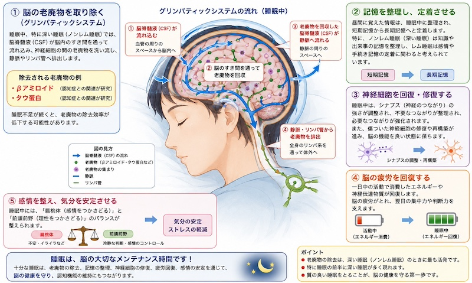
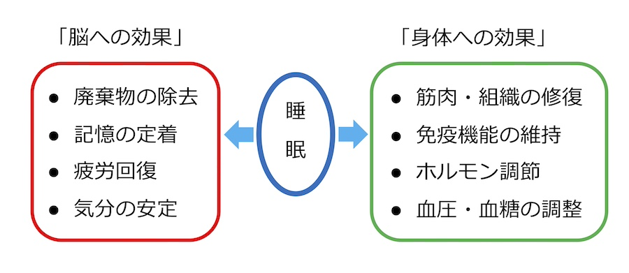

公開日：2026年9月 ｜ 最終更新：2026年9月
第１章 はじめに
「睡眠」は、単に「体を休める時間」ではありません。
近年の研究により、睡眠中には、脳の老廃物を除去し、記憶を整理し、神経細胞を修復し、翌日の活動に備えるための重要な働きが行われていることが分かってきました。
人生の約3分の1は睡眠です。
これほど長い時間を費やす睡眠には、それだけ重要な役割があります。
第２章 睡眠中に脳で起こること

睡眠中の脳で起こっていること
眠っている間に、脳ではさまざまなメンテナンスが行われ、翌日の活動に備えています。
（1）脳の老廃物を取り除く
睡眠中には
を通って老廃物が洗い流されます。
これを、「グリンパティックシステム（glymphatic system）」と呼びます。
（専門的です）
睡眠中、特に、深いノンレム睡眠では、「脳脊髄液」が血管周囲の空間を通って、脳内に流れこみ、神経細胞の間を循環しながら、老廃物を洗い流します。
その後、老廃物を含んだ脳脊髄液は、静脈やリンパ系へと排出され、体外へ運ばれます。
この働きは、特に睡眠前半の深いノンレム睡眠で最も活発になると考えられています。
ここで除去されるものとして
などがあります。これらは認知症との関連が研究されています。
「睡眠不足が続くと老廃物の除去効率が低下する可能性があります。」
（2）記憶を整理し、定着させる
昼間に覚えた情報は、睡眠中に
「短期記憶」 ⇨ 「長期記憶」
へ整理されます。
特に
がそれぞれ異なる役割を果たしています。
「深いノンレム睡眠とレム睡眠における記憶整理の違い」
| 深いノンレム睡眠 | レム睡眠 |
|---|
| 知識・事実を覚える（学習） | 技能・動作を覚える（テニス技法など） |
| 記憶を長期保存する | 運動技能を定着させる |
| 老廃物の除去が最も活発 | 感情を整理する |
| 神経細胞の修復 | 創造性やひらめきにも関与すると考えられる |
深いノンレム睡眠では、その日に学んだ知識や出来事が整理され、海馬から大脳皮質へと記憶が移されて長期記憶として定着します。また、この時期には脳の老廃物除去（グリンパティックシステム）が最も活発に働くことも分かっています。
一方、レム睡眠では、テニスや自転車の運転などの運動技能（手続き記憶）の定着や、感情の整理が行われ、心の健康にも重要な役割を果たしていると考えられています。
なお、近年の研究では、両者は連携して記憶を定着させていることがわかっています。
睡眠の種類とそのサイクル
一晩の睡眠では、「ノンレム睡眠（深い睡眠）」→「レム睡眠」→「再びノンレム睡眠」…
という約90分の周期を4～5回繰り返しています。
一般に、睡眠の前半は、深いノンレム睡眠が多く、後半になるほどレム睡眠の割合が増えていきます。
（3）神経細胞を回復・修復させる
睡眠中は
- シナプスの調整
- 神経細胞の修復
- 神経ネットワークの再構築
などが行われています。
（4）脳の疲労を回復する
一日活動した脳では
が消費されています。
睡眠中に
などを行います。
（5）感情を整え、気分を安定させる
睡眠不足では
が起こりやすくなります。
十分な睡眠は、前頭前野と扁桃体のバランスを保ち、精神の安定に役立ちます。
第３章 身体にとっての睡眠
「脳以外のところでの睡眠の効果」
(1) 成長ホルモン
深い睡眠中には「成長ホルモン」が分泌され、
などの修復が行われます。
高齢者では成長ホルモンの量は減少しますが、組織修復には依然として重要です。
(2) 免疫
睡眠不足では、「免疫機能」が低下し、感染症にかかりやすくなることが知られています。
(3) その他のホルモン
睡眠不足では「食欲」を調節する「レプチン」と「グレリン」のバランスが崩れ、食べ過ぎにつながることがあります。
(4) 血圧
夜間には血圧が少し下がることで、心臓や血管を休ませています。
(5)血糖
睡眠不足では、インスリンの働きが低下し、糖代謝にも悪影響を及ぼします。

睡眠の脳や身体への効果
第４章 睡眠不足が続くと
- 集中力低下
- 判断力低下
- 記憶力低下
- 免疫低下
- 生活習慣病リスク増加
- 認知機能低下
などとの関連が指摘されています。
第５章 良い睡眠のために
例えば
- 朝日を浴びる
- 昼間に運動する
- 寝酒を避ける
- 就寝前はスマホを控える
- 規則正しい生活
に心がけるようにしましょう。
第６章 まとめ
睡眠は、単なる休息ではありません。
眠っている間にも脳では、「老廃物の除去」、「記憶の整理」、「神経細胞の修復」など、多くの重要な働きが行われています。
また、身体では、睡眠中に「組織の修復や免疫機能の維持、ホルモンバランスの調整」などが進められます。
「十分な睡眠は、脳と身体の健康を守るための大切な生活習慣の一つです」。
睡眠を助けるサプリメントは？
最近では、睡眠の質の改善や入眠を助けることを強調したサプリメントが数多く販売されています。
下の表にまとめ、科学的エビデンスについても付記します。
| サプリメント | 解説 |
|---|
| グリシン | エビデンス多い、効果は穏やか、深部体温低下、入眠改善など |
| GABA | 口から摂取したGABAが脳へ十分届くかについては現在も研究中、リラックス効果や睡眠改善など |
| テアニン | 安全性は高い、高齢者も利用しやすい、リラックス効果、軽度の睡眠改善 |
| メラトニン | 脳内ホルモン（体内時計、睡眠リズム調節に）、海外ではサプリとして、日本では医薬品形態で流通 |
| マグネシウム | 不足気味の人には効果（筋肉の緊張や神経興奮を抑える）、高齢者は不足傾向 |
これらのサプリメントが健康な人の睡眠を大きく改善するという十分な科学的根拠は限定的です。
参考文献
- 1. National Institute of Neurological Disorders and Stroke. Brain Basics: Understanding Sleep
- 2. National Institutes of Health. Your Guide to Healthy Sleep
- 3. American Academy of Sleep Medicine. 睡眠医学ガイドライン
- 4. 厚生労働省「健康づくりのための睡眠ガイド 2023」
- 5. 日本睡眠学会 「睡眠医療ネクサス」
- 6. Maiken Nedergaard & 12 authors, Sleep Drives Metabolite Clearance from the Adult Brain, Science, 342, 373 (2013)
トップページに戻る